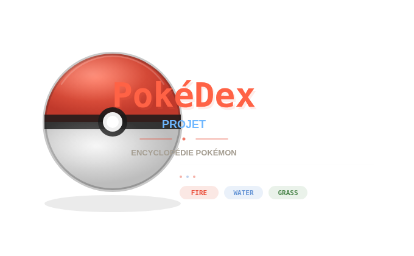

Description du projet
Ce projet personnel m'a permis de créer un Pokédex complet - une application web pour consulter
et suivre les informations des Pokémon. Le projet a débuté à partir d'une base de données Excel trouvée sur Internet,
que j'ai ensuite transformée en base de données SQL pour en faire un véritable site web fonctionnel.
Face aux limites des exports CSV (données trop complexes, formats incohérents, impossible à exploiter correctement),
j'ai dû chercher une alternative et j'ai découvert PokéAPI (pokeapi.co), une API publique complète
que j'ai intégrée pour alimenter automatiquement la base de données via un panel d'administration dédié.
Évolution du projet
- Découverte d'une base de données Pokémon en Excel
- Conversion en base de données SQL structurée
- Développement du site web de consultation
- Ajout de fonctionnalités avancées (suivi des captures, formes, versions chromatiques)
- Les exports CSV se révèlent trop complexes et impossibles à exploiter correctement -> recherche d'une alternative
- Découverte et intégration de PokéAPI pour importer les données automatiquement
- Développement du panel admin pour piloter les imports depuis PokéAPI
- Mise en place du système d'authentification (inscription, connexion, profil utilisateur)
- Ajout de la synchronisation automatique Pokédex régional -> National
- Optimisation et amélioration continue
Objectifs
- Créer une application web attractive et fonctionnelle
- Gérer efficacement une grande base de données (1000+ Pokémon)
- Implémenter des fonctionnalités de recherche et filtrage
- Créer une interface utilisateur ergonomique
- Améliorer les performances de consultation de données
- Permettre à chaque utilisateur de suivre sa propre collection sur plusieurs Pokédex régionaux
Technologies utilisées
PHP
MySQL/SQL
HTML5
CSS3 / Bootstrap
JavaScript ES6
Fonctionnalités principales
- Catalogue complet de tous les Pokémon
- Recherche par nom (français, anglais, allemand)
- Sélectionner les Pokémon attrapés (version normale et chromatique)
- Gestion des multi-formes (Méga évolutions, Gigamax, formes genrées, formes régionales…)
- Synchronisation automatique : cocher un Pokémon dans un Pokédex régional met à jour le National
- Système d'authentification complet (inscription, connexion, modification du profil)
- Panel admin pour importer les données depuis PokéAPI ou via fichier CSV/JSON
- Interface responsive et intuitive
Points forts
- Base de données bien structurée avec 1000+ entrées
- Requêtes SQL optimisées pour les performances
- Interface utilisateur attrayante et facile à utiliser
- Recherche et filtrage rapides et précis
- Mises à jour en temps réel via AJAX sans rechargement de page
- Code modulaire et extensible
Défis techniques
- Structuration efficace d'une grande base de données
- Les CSV ne pouvaient pas être exportés correctement (données trop complexes) -> migration vers PokéAPI
- Modélisation des multi-formes Pokémon (identifiants composites : "25", "25_m", "25_mega"…)
- Logique de synchronisation unidirectionnelle Pokédex régional -> National
- Implémentation de la recherche multi-critères en temps réel
- Gestion des images (plusieurs sprites par Pokémon : normal, chromatique, formes)
- Responsive design pour tous les appareils
Apprentissages
Ce projet personnel m'a permis d'approfondir mes compétences en :
- Conversion et structuration de données existantes
- Conception de bases de données relationnelles complexes
- Optimisation des performances avec SQL
- Consommation et intégration d'une API externe (PokéAPI)
- Développement personnel et apprentissage autonome
- Créativité dans l'implémentation d'une idée et résolution de problèmes concrets
État du projet
Statut : Projet personnel en développement continu
Disponibilité : Disponible en ligne